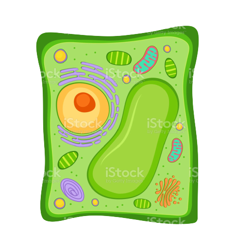
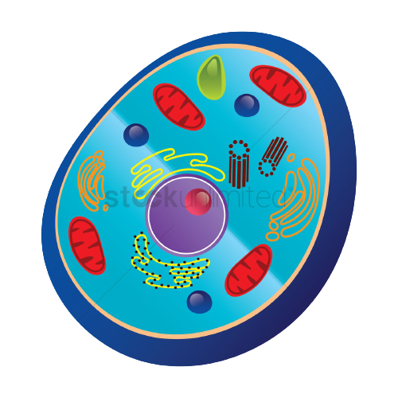

Plant cell
In addition to cell membrane,Plant cells
also have a cell wall which is the most
outer covering layer of the cell which is rigid.
There is large vacuole present in it.
About 80 to 90 % place is occupied by it.
Due to the vacuole present in it,the nucleus is
pushed to one side in cell.
Plastid-chloroplasts containing chlorophyll is
present in it.
They do not chage the shape as they are rigid.
Lysosomes are absent in plant cells.
Plant cells do not burst while kept in hypotonic
solution due to the rigidity of cell wall.

Animal cell
There is only cell membrane present in it.
In this,Vacuoles are generally small.
In,this nucleus is almost in the middle of the cell.
There is lack of chloroplasts in it.
They can change there shape
Lysosomes are present in it.
Animal cells may burst while kept in hypotonic solution.
